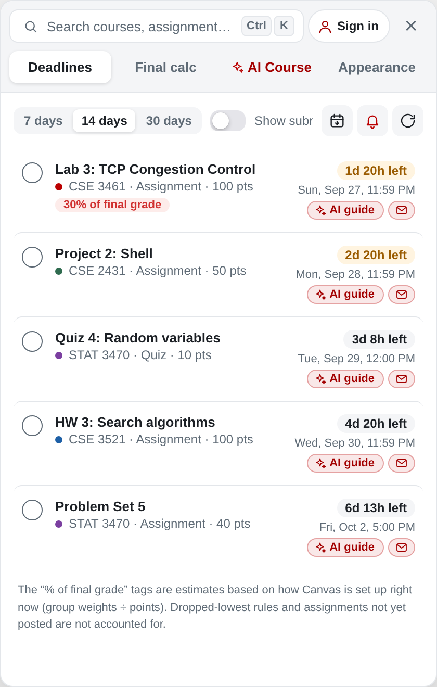
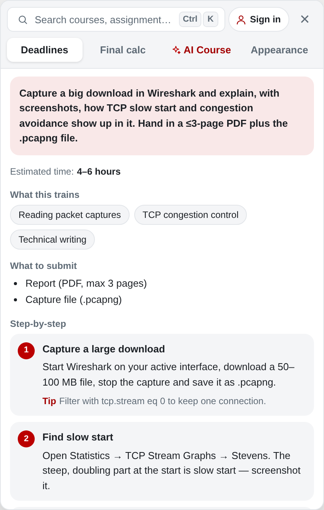
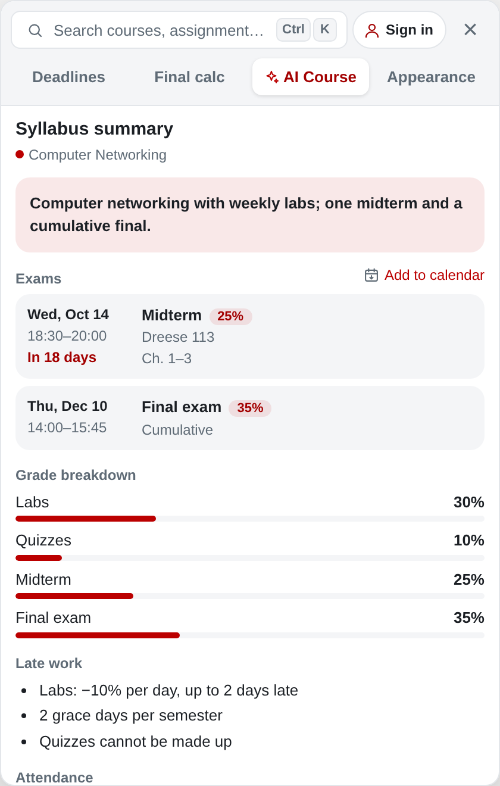
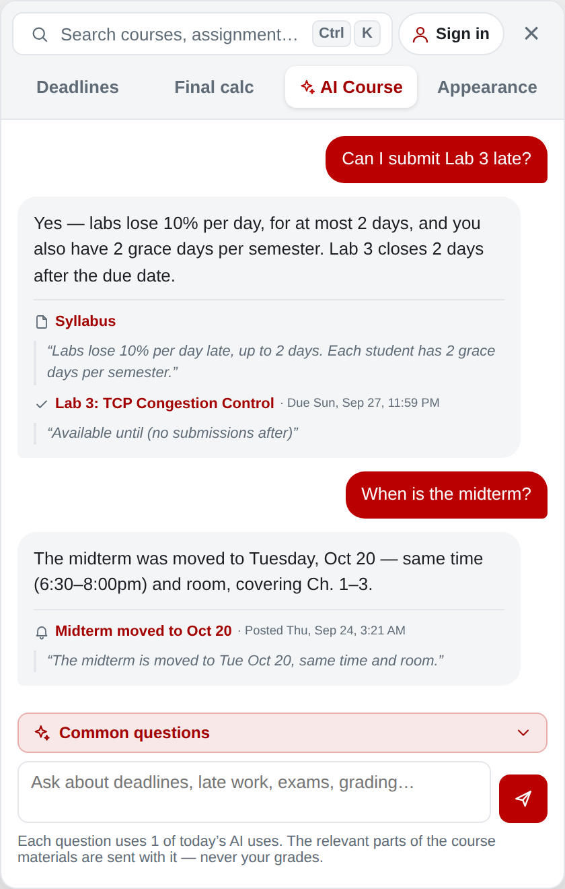
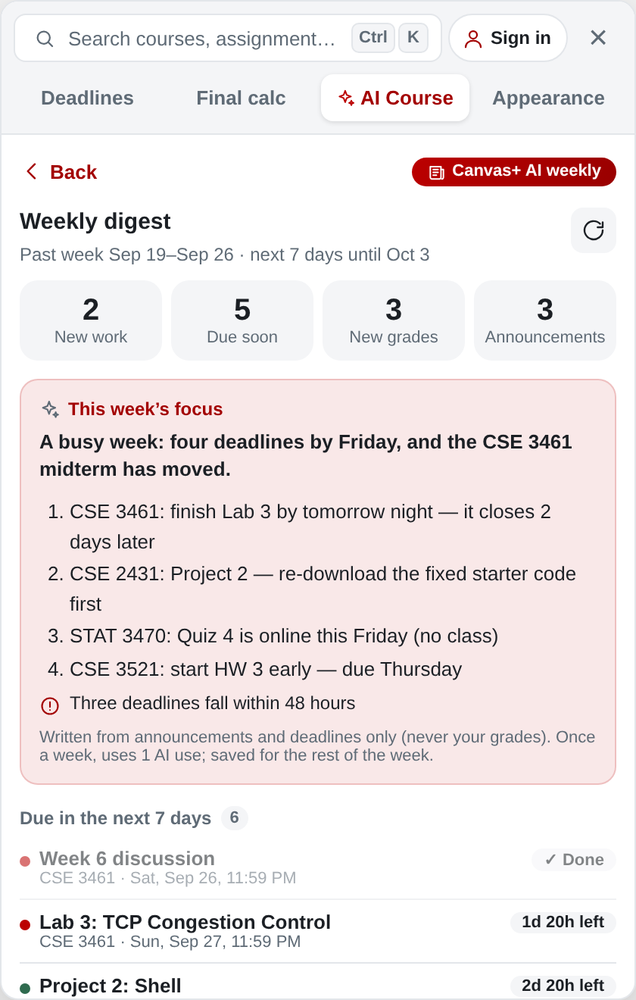
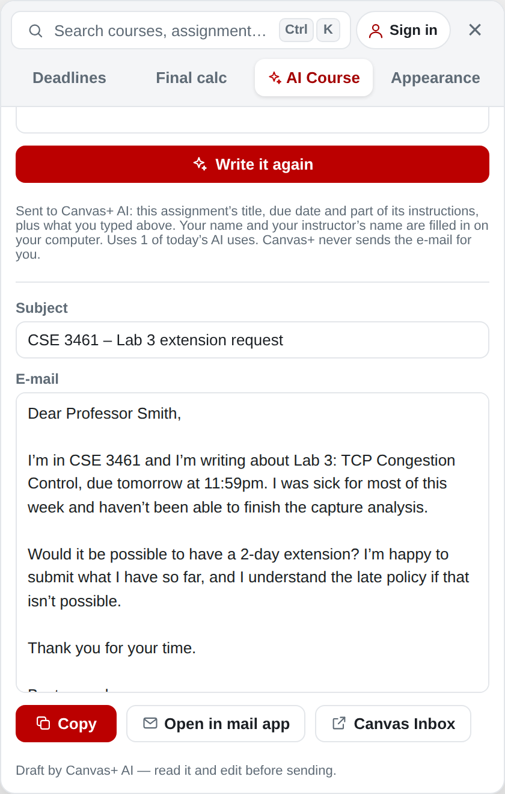

Every deadline in one list, what you need on the final, a Canvas that looks the way you like — and step-by-step AI guides for your assignments.所有截止时间一目了然，期末要考多少分一算就知道，界面随你定制，还有 AI 一步步带你拆解作业。
Works on any Canvas school (e.g. Ohio State’s Carmen). Chrome & Edge.支持所有使用 Canvas 的学校（比如 OSU 的 Carmen），Chrome 和 Edge 都能用。

Open it from the tab on the right of any Canvas page, or press ⌘K / Ctrl+K to search.在任意 Canvas 页面点右侧的小标签打开，或者按 ⌘K / Ctrl+K 搜索。
Every assignment, quiz and discussion from all your courses, sorted by due date, with how much of your grade each is worth. Tick it off, export to your calendar, get reminders.所有课程的作业、测验和讨论按截止时间排好，标出每项占总成绩多少。可以打勾完成、导出到日历、设置截止提醒。
Pick a target grade and see exactly what you need on the final. No weights in Canvas? Canvas+ reads them from the syllabus.选一个目标成绩，直接告诉你期末要考多少。Canvas 里没设权重？Canvas+ 会从 Syllabus 里读出来。
Step-by-step assignment guides, syllabus summaries, answers from your own course materials, e-mails to your professor and a weekly digest. Teaches the process, never hands you answers.作业一步步拆解、Syllabus 总结、只根据课程资料回答的问答、给教授写邮件，还有每周简报。只教方法，不给答案。
Real dark mode with no white flashes, your own background photo with frosted cards, course colours, and hide the parts you never use.真正的暗色模式（切换页面不闪白）、自定义背景图和毛玻璃卡片、课程配色，还能隐藏用不到的板块。

Click “AI guide” on any assignment.在任何作业上点「AI 总结」。
Free with a Canvas+ account (sign in with Google — no password). AI can be wrong; the assignment itself is what counts.登录 Canvas+ 账号即可免费使用（可以用 Google 登录，不需要密码）。AI 可能出错，一切以作业原文为准。
In the “AI Course” tab of the panel — and on every assignment page.在面板的「AI 课程」标签里，以及每个作业页面上。

Exam dates (one click to your calendar), grade breakdown, late policy, attendance and office hours — from the syllabus and the PDF it links to.考试时间（一键加入日历）、成绩构成、迟交政策、出勤和 office hours，从 syllabus 和其中的 PDF 自动整理。

“Can I submit this late?” Answered only from the course’s syllabus, assignments and announcements, with the exact sentences it used. If the course doesn’t say, it tells you.「这个作业能不能 late submit？」只根据这门课的 syllabus、作业和公告回答，附上原文；资料里没写就直接告诉你。

Every Monday: new assignments, what’s due in the next 7 days, grade changes and important announcements — plus this week’s priorities.每周一自动整理：新作业、接下来 7 天截止、成绩变化和重要公告，还有本周重点。

Extension, rubric question or office hours: a polite draft you can edit. Names are filled in on your computer, and nothing is sent for you.请求延期、询问 rubric、预约 office hour，生成可修改的得体草稿。名字只在你的电脑上填入，也不会替你发送。
Your grades never leave your computer. AI can be wrong — the course itself is what counts.你的成绩不会离开你的电脑。AI 可能出错，一切以课程原文为准。
Everything except extra AI is free, forever.除了更多的 AI 次数，所有功能永久免费。
Your Canvas data stays in your browser. Your grades, submissions and Canvas login are never sent anywhere. No tracking, no ads. 你的 Canvas 数据只留在你的浏览器里。成绩、提交的作业和 Canvas 账号永远不会被发送出去。没有跟踪，没有广告。Read the privacy policy查看隐私说明